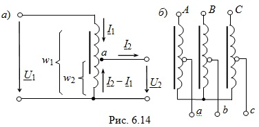

Однофазный автотрансформатор отличается от обычного трансформатора тем, что имеет лишь одну обмотку - обмотку высшего напряжения, а обмоткой низшего напряжения служит часть обмотки высшего напряжения (рис. 6.14а).

Изменением точки а на обмотке автотрансформатора можно плавно регулировать вторичное напряжение U2, например, в лабораторных автотрансформаторах (ЛАТР), у которых одним из выводов вторичной цепи служит подвижный контакт.
Напряжения и токи автотрансформатора связаны теми же приближенными соотношениями, что и в трансформаторе:
U1/U2 ≈ w1/w2 ≈ I2/I1.
Ток в общей части обмотки приближенно равен разности вторичного и первичного токов. Поэтому общую часть первичной и вторичной обмоток можно изготовить из значительно более тонкого провода, что снижает стоимость обмотки автотрансформатора. К тому же для размещения обмотки в окне магнитопровода требуется меньше места. Однако эти преимущества уменьшаются с увеличением коэффициента трансформации.
Обмотки трёхфазных автотрансформаторов обычно соединяют по схеме звезда с выведенной нейтральной точкой или без неё (рис. 6.14б) .